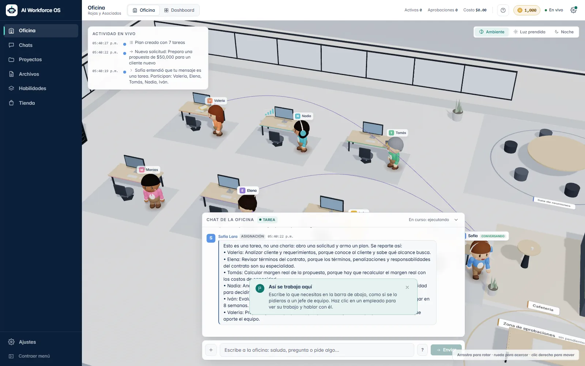
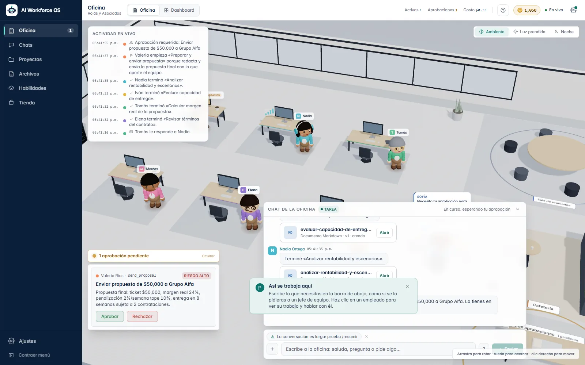
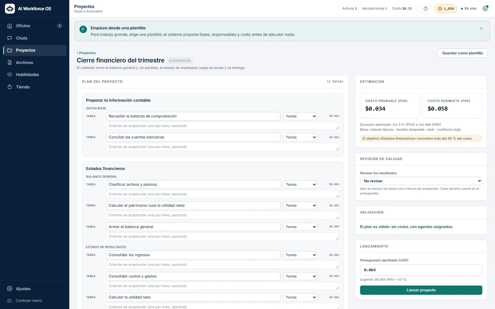
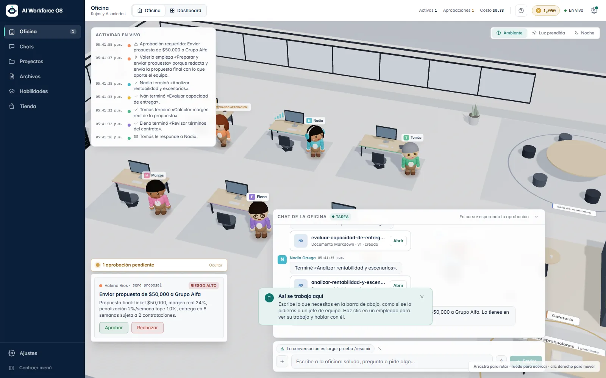

Aprobaciones humanas en lo sensible
Enviar una propuesta o un contrato requiere tu decisión. Los agentes pueden pedir aprobación; nunca darla. Y eliges cuánta autonomía tiene cada empleado.
Acceso anticipadoFunciona sin clave de IA
Pídele trabajo en lenguaje natural a Ventas, Legal, Contabilidad, Análisis, Operaciones, RR. HH. y tu Asistente. Míralos repartirse la tarea en una oficina 3D, aprueba lo sensible y recibe un reporte con lo que se hizo y lo que costó.
¿Ya tienes cuenta? Entrar
Hoy funciona en modo simulación sin clave de IA, o en vivo con tu propia clave. Todavía no hay precios: estamos en acceso anticipado.
Lo que trae hoy
El problema
Les das una tarea y te devuelven un resultado. Lo que pasó en medio queda en una caja negra.
Un historial de mensajes no te dice quién tocó qué, ni qué salió hacia afuera.
El costo llega después, en una factura, cuando ya no puedes decidir nada.
Si no ves el proceso ni a quién consultaron, revisar el resultado es adivinar.
AI Workforce OS parte de lo contrario: todo lo que hace un empleado de IA se ve, tiene un tope de gasto y se detiene a esperarte cuando importa.
Cómo funciona
Escribes lo que necesitas. La Asistente arma el plan, el equipo trabaja en paralelo, tú apruebas lo sensible y recibes el resultado.
En lenguaje natural, como a un colega. Antes de ejecutar ves un costo estimado.
La Asistente divide el trabajo en tareas con dependencias y las reparte.
Lo que no depende de otra cosa corre a la vez, y se consultan entre ellos.
Antes de enviar algo afuera, el empleado se detiene y te pide el visto bueno.
Qué se hizo, quién participó y cuánto costó, en un solo lugar.
La app real
Lo que ves en pantalla sale de eventos reales del sistema. Estas capturas son del modo simulación.




Control
Estas capacidades existen hoy en el código de la app. Lo que depende de integraciones reales está en «Estado actual».
Enviar una propuesta o un contrato requiere tu decisión. Los agentes pueden pedir aprobación; nunca darla. Y eliges cuánta autonomía tiene cada empleado.
Ves un rango estimado antes de ejecutar. Hay topes por solicitud, por empleado y por organización; al tocar el de una solicitud o un empleado, el trabajo se pausa y tú decides si sigue.
Congela toda la actividad o pasa la oficina a solo lectura. También puedes pausar a un empleado o apagar una herramienta concreta.
Cada acción relevante queda en una bitácora encadenada por hash que la app solo puede añadir, no editar ni borrar. Se exporta y se verifica.
Las claves viven en una bóveda cifrada (AES-256-GCM). El modelo de IA nunca las ve: las herramientas las ejecuta el backend.
Un proyecto se reparte en tareas con dependencias; lo que no depende de otra cosa corre a la vez.
Ver el ejemploCinco plantillas de workflow y cuatro paquetes (agencia, comercio, servicios profesionales y general) que fijan reglas y autonomía.
Interfaz y empleados en español (y en inglés), con tono regional configurable. Trae plantillas fiscales de ejemplo para México y España, marcadas como ejemplo.
Trabajo en paralelo
Ejemplo: el cierre financiero del trimestre, como en la captura de Proyectos. El Contador no espera a terminar una cosa para empezar la otra.
El equipo
Cada uno tiene su rol, sus herramientas, memoria y un historial de lo que hizo. Y puedes contratar otras profesiones desde plantillas.
Sofía Lara
Planifica, coordina al equipo y consolida el reporte final.
Valeria Ríos
Analiza al cliente y prepara propuestas.
Elena Castro
Revisa contratos y señala riesgos.
Tomás Vidal
Calcula márgenes y arma estados financieros.
Nadia Ortega
Evalúa rentabilidad y saca hallazgos de los datos.
Iván Duarte
Revisa capacidad, entregas y necesidades de personal.
Marcos Peña
Prepara procesos de contratación y perfiles.
Profesiones descritas como configuración, con su riesgo y sus aprobaciones:
Los empleados preparan y organizan. No dan asesoría legal, fiscal ni médica: esas decisiones son de un profesional humano.
Seguridad
Principios de diseño que puedes revisar en la documentación técnica. No son certificaciones.
Estado actual
Lo actualizamos cuando algo cambia. Revisado en octubre de 2026.
De punta a punta en modo simulación: respuestas guionadas y realistas, sin clave de IA y sin costo.
OpenAI, Claude, Kimi, DeepSeek o un endpoint compatible. Funciona, pero la hemos probado menos que la simulación.
Registro con correo, cuenta de prueba de 24 horas e invitaciones con roles (owner, admin, member, viewer).
Las solicitudes en curso y las aprobaciones pendientes se retoman al arrancar, con una sola instancia del servidor.
Con permisos y aprobación antes de enviar. Aún no probados con cuentas reales: no los uses todavía con datos importantes.
Implementados en el código; todavía no validados con clientes.
Diseñados en papel. Hoy no existen.
Pendientes. Hoy el SSO es solo OIDC y la recuperación supone un solo servidor.
Aún no hay. Primero queremos aprender del uso real.
Primeros pasos
Crea tu cuenta y en cinco minutos habrás pedido algo, visto trabajar al equipo y aprobado tu primera acción.
Escribe lo que necesitas en la barra de la oficina, como se lo pedirías a un jefe de equipo. También hay atajos para probar.
Tus empleados de IA se reparten el trabajo y lo ves pasar en vivo: quién hace qué, cuánto cuesta y en qué punto va.
Lo sensible se detiene y espera tu decisión. Apruebas o rechazas desde la bandeja; nada importante sale sin ti.
Obtienes un reporte, y cada tarea terminada suma monedas para vestir a tu equipo y decorar la oficina.
Preguntas
Depende de ti. Sin clave corre en modo simulación, con resultados guionados y sin costo. Con tu propia clave de OpenAI, Claude, Kimi o DeepSeek usa un modelo real; esa ruta funciona, pero la hemos probado menos que la simulación.
Los conectores de Gmail, Google Calendar y Drive, Slack, LinkedIn y GitHub existen y siempre piden tu aprobación antes de enviar, pero aún no están probados con cuentas reales. No los uses todavía con correo importante. WhatsApp está planeado, no construido.
Las claves van a una bóveda cifrada y el modelo no las ve. Con IA real, el texto de las tareas se envía al proveedor de modelo que configures; revisa sus condiciones antes de usar datos sensibles.
No. Un agente puede pedir aprobación, pero la decisión es siempre de una persona. Tú ajustas qué requiere aprobación y cuánta autonomía tiene cada empleado.
No es la idea. Es un equipo de apoyo que prepara, organiza y consulta; las decisiones importantes siguen siendo tuyas. No sustituye a un abogado, a un contador ni a otro profesional.
Una cuenta de prueba desechable, con su propia oficina, que deja de funcionar a las 24 horas. No pide correo: el usuario y la contraseña se muestran una sola vez.
Todavía no hay precios. Estamos en acceso anticipado para aprender del uso real antes de fijarlos.
Todavía no. Ya hay SSO por OIDC, SCIM y recuperación tras reinicios, pero no tenemos certificaciones ni SAML y no lo hemos validado con empresas grandes. Hoy está pensado para equipos pequeños y profesionales hispanohablantes.
Crea tu cuenta con tu correo y el nombre de tu empresa: llegas a tu propia oficina, separada de las demás. Todavía no hay precios; estamos en acceso anticipado. Esta página no recoge datos: el registro ocurre en la app.